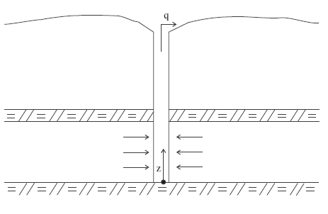
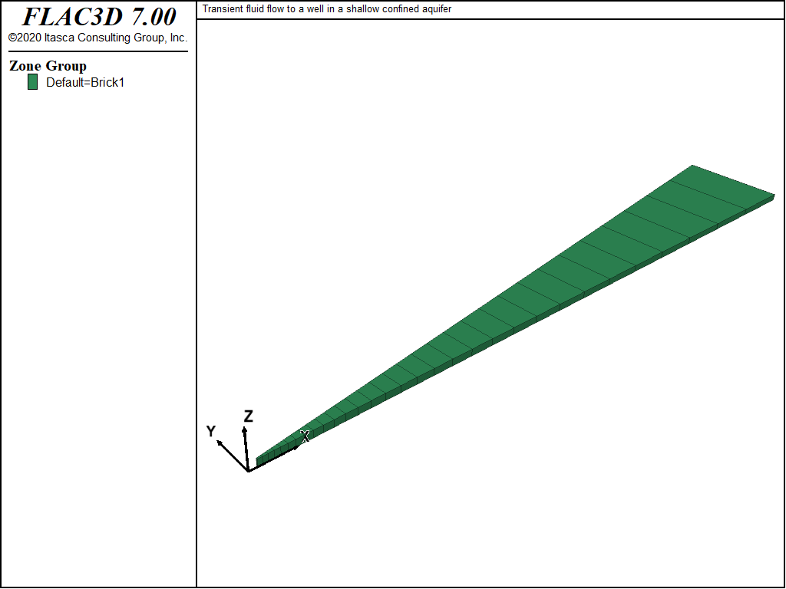
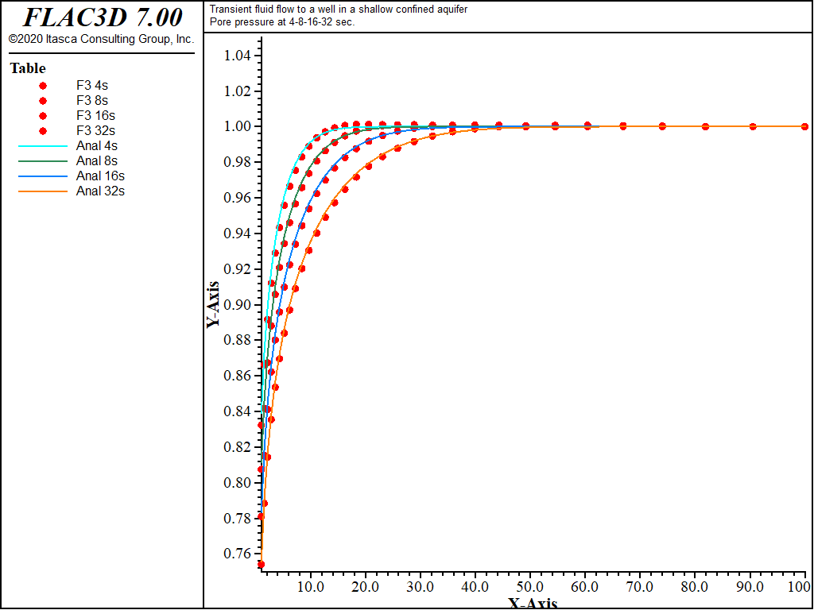
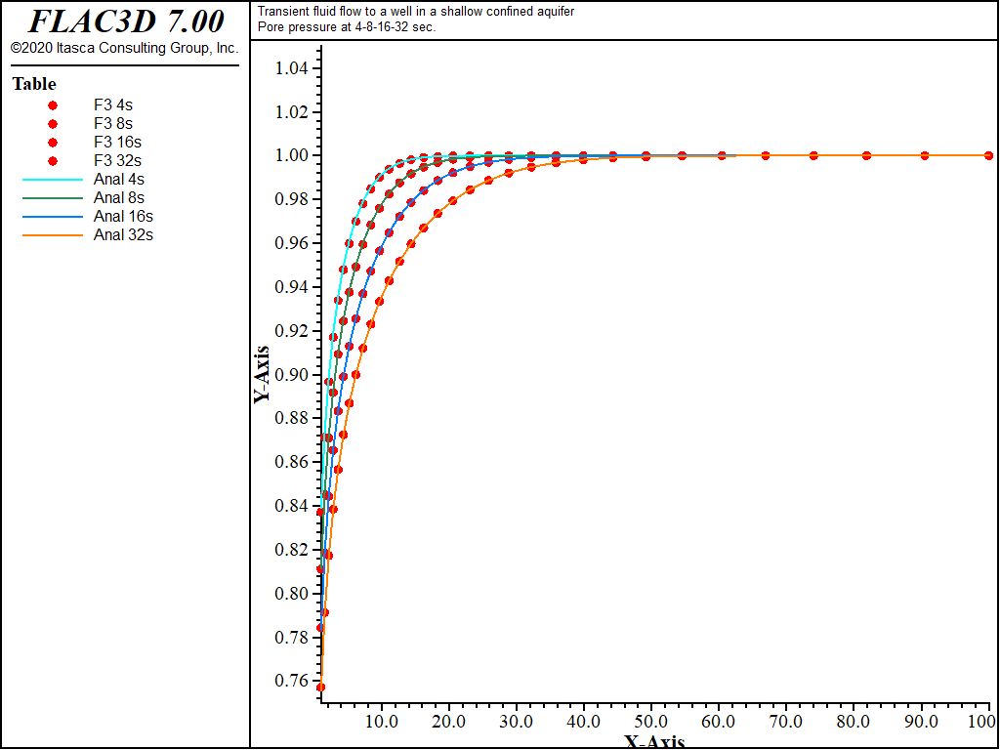
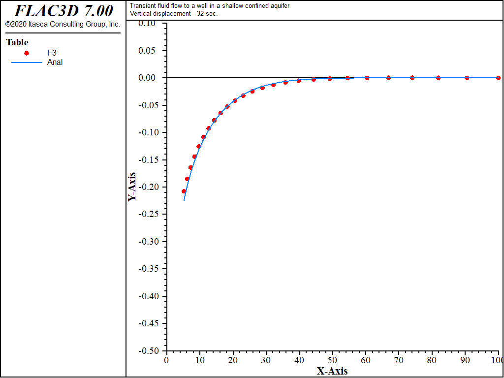
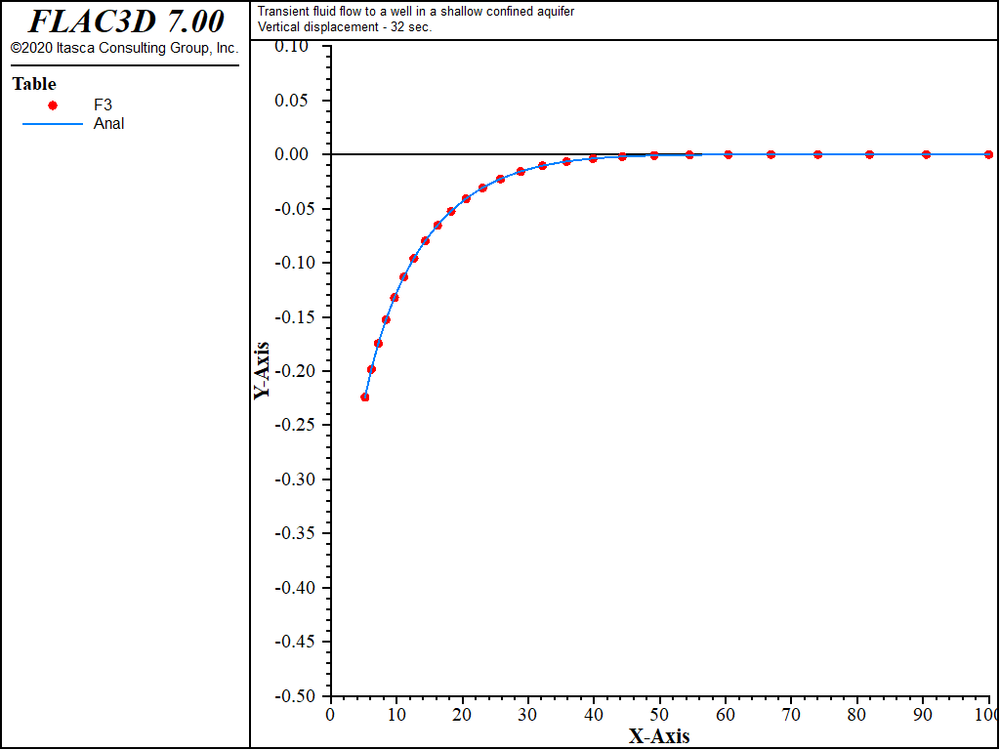
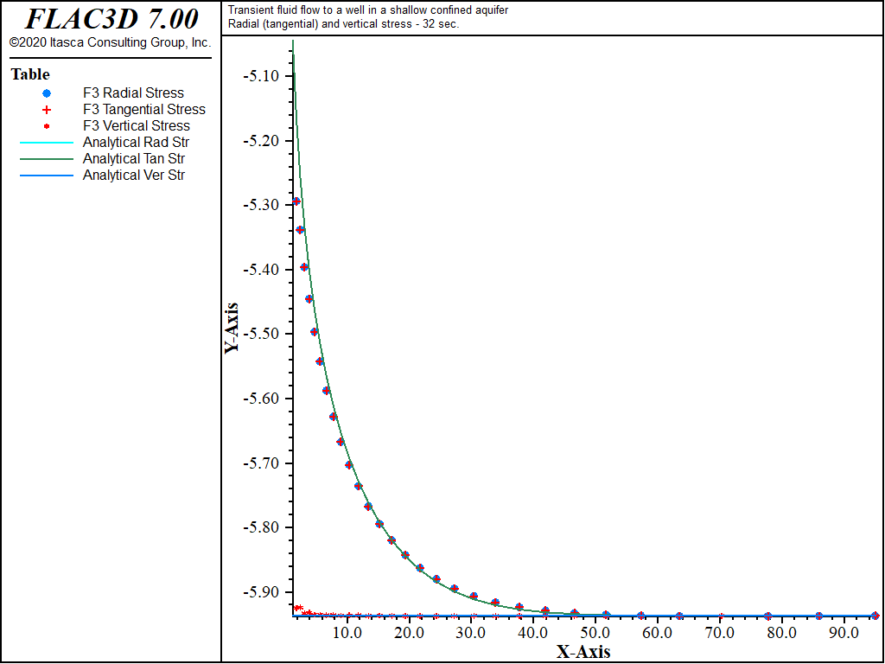

浅层承压含水层中向井的瞬态流体流动
注意
本示例的项目文件可在 FLAC3D 中查看/运行。[1] 该项目的主数据文件见本示例末尾（main data files）。
一个水平范围很大的浅层承压含水层具有均匀的初始孔隙压力 \(p_0\) 和初始各向同性应力 \({\sigma}_{zz}^0\)。一口完全穿透含水层的井自时刻 \(t = t_0\) 起以单位深度恒定流量 \(q\) 产水。弹性多孔介质为均质且各向同性，地下水流动由达西定律控制。瞬态效应与水和土骨架的可压缩性有关。在本问题中，孔隙压力变化的影响相对于上覆压力较小，可假定含水层中的竖向应力随时间保持不变。此外，与竖向应变相比，水平应变可忽略。向井的流体流动条件示意于图 1（Figure 1）。本问题的数值解采用耦合与非耦合两种建模方法给出。

图 1：浅层承压含水层中向井的流动。
选取圆柱坐标系，其 \(z\) 轴沿井轴方向向上。将输运定律代入流体质量平衡方程，并考虑到 \({\epsilon}_{rr} = {\epsilon}_{\theta \theta}\) = 0，可得
其中 \(k\) 为均质渗透系数，\(M\) 为 Biot 模量，\(\alpha\) 为 Biot 系数。
在 \({\sigma}_{zz}\) 恒定的情况下，将弹性本构关系 \({\sigma}_{zz} - {\sigma}_{zz}^0 + \alpha(p - p_0) = \alpha_1 {\epsilon}_{zz}\) 对时间求偏导，可得
其中 \(\alpha_1 = K + 4/3 G\)。
利用最后一个方程将方程(1)中的 \({\epsilon}_{zz}\) 表示为 \(p\) 的函数，经过若干推导可得
其中 \(c = k/S\) 为扩散系数，\(S = 1/M + {\alpha}^2 / {\alpha_1}\) 为储水系数；由于问题为轴对称且与 \(z\) 无关，\(p\) 的拉普拉斯算子可表示为
该微分方程在以下边界条件下的解
由 Theis（1935）给出。其形式为
其中 \(\hat{p} = p k/q\)。无量纲变量 \(u\) 由下式给出
而 \(E_1\) 为指数积分，其定义为
在利用力学本构方程将 \(\sigma_{zz}\) 表示为 \(\epsilon_{zz}\) 的函数、并用 \(\partial \epsilon_{zz} / \partial z\) 替换 \(\epsilon_{zz}\) 之后，对平衡方程 \(\partial {\sigma}_{zz}/\partial z\) = 0 积分即可得到竖向位移。代入边界条件并利用方程(7)，可得
其中 \({\hat{u}}_z = u k \alpha_1 /(\alpha q H)\)，且 \({\hat{x}} = z/H\)。
应力由力学本构方程和关于 \(\hat{p}\) 的方程(7)导出。其形式为
其中 \(\hat{\sigma} = \sigma k \alpha_1 / (q \alpha G)\)。
本问题的 FLAC3D 网格对应于单位高度空心圆柱中一个 9° 的楔形体。井的轴线和半径分别对应于圆柱的轴线和半径。圆柱外半径选为 100 m，以模拟流动域的远边界。图 2（Figure 2） 给出了 FLAC3D 网格。


图 2：浅层含水层中井的 FLAC3D 网格。
共使用 31 个网格单元，沿径向排列并渐变。位移在径向和切向方向固定，圆柱底部在竖直方向固定。在模型顶部施加大小为 \(- \sigma_{zz}^0\) 的竖向压力。
本示例的性质定义如下：
| 干体积模量（\(K\)） | 118 MPa |
| 干剪切模量（\(G\)） | 71 MPa |
| 水的体积模量（\(K_f\)） | 2 GPa |
| Biot 系数（\(\alpha\)） | 1.0 |
| 孔隙率（\(n\)） | 0.4 |
| 渗透率（\(k\)） | 2.98 × 10-8 \({m^2}/{Pa-sec}\) |
初始孔隙压力为 147 kPa，初始各向同性应力为 -147 kPa。由于 Biot 系数等于 1（土颗粒不可压缩），Biot 模量等于水的体积模量与孔隙率之比（本例中 \(M\) = 5 GPa）。单位含水层厚度的抽水率为 2.21 10-3 m2/s，井半径 \(r_w\) 取为 1 m。
应力和孔隙压力按上述给定值初始化。井的流量通过施加在井半径 \(r = r_w\) 处、大小为 \(q/(2 \pi r_w)\) 的表面通量来模拟。
采用显式求解算法求解耦合问题（模型流体活动命令（model fluid active） 开启（on） 和 模型力学活动命令（model mechanical active） 开启（on））。最大不平衡力学力限值为 10.0，耦合流体—力学计算步中的最大力学子步数限值为 1000，且力学过程为流体流动主过程的“从”模块。这通过以下命令实现：
model fluid substep 100
model mechanical substep 1000
model mechanical slave on
通过指定这些命令，在流体流动计算进行过程中，不平衡力学力将保持在较小值。
本示例由孔隙压力驱动，对于所给定的 2 GPa 流体体积模量，刚度比 \(R_k\) 的值约为 23。因此，流动计算可与力学计算解耦，并可采用刚度比（Stiffness Ratio）中讨论的方法。在仅流动步中，流体模量按方程(7)确定，以保持系统的扩散率。在仅力学步中，流体模量设为零，以防体积应变引起进一步的调整。非耦合计算在 4 秒流动时间内采用以下命令：
model fluid active on
model mechanical active off
zone gridpoint initialize fluid-modulus = @uwb
model solve time-total 4.
model fluid active off
model mechanical active on
zone gridpoint initialize fluid-modulus = 0.0
model solve unbalanced-maximum 10.
FISH 变量 UWB 程序（uwb） 为由方程(7)计算的调整后流体模量。请注意，若条件使得 \(R_k <<< 1\)，则流动计算期间无需调整流体模量，因为此时扩散率将是准确的。
孔隙压力、应力和竖向位移的解析解编写为一个 FISH 函数。解析解中使用的指数积分函数编写为另一个 FISH 函数。解析值和数值值存储在表格中。随后以图形形式比较结果。选定时刻的孔隙压力比较在耦合解中见图 3（Figure 3），在非耦合解中见图 4（Figure 4）。32 秒时的竖向位移值和应力由 FISH 函数 井 32 命令（well _32） 处理，并在耦合解中示于图 5（Figure 5） 和 图 7（Figure 7），在非耦合解中示于图 6（Figure 6） 和 图 8（Figure 8）。
耦合解与非耦合解的结果基本相同，且与解析解吻合良好。非耦合解达到最终状态的速度比耦合解快得多。请注意，耦合计算需要 500,000 步以上，而非耦合计算约需 16,000 步。


图 3：4、8、16 和 32 秒时的孔隙压力分布——耦合解（解析值 = 线；数值 = 符号）。


图 4：4、8、16 和 32 秒时的孔隙压力分布——非耦合解（解析值 = 线；数值 = 符号）。


图 5：32 秒时径向、切向和竖向应力分布——耦合解（解析值 = 线；数值 = 符号）。


图 6：32 秒时径向、切向和竖向应力分布——非耦合解（解析值 = 线；数值 = 符号）。


图 7：32 秒时径向位移分布——耦合解（解析值 = 线；数值 = 符号）。

参考文献
Theis, C. V. “The Relation between the Lowering of the Piezometric Surface and the Rate and Duration of Discharge of a Well Using Groundwater Storage,” Trans. Am. Geophys. Union, 10, 519-524 (1935).
数据文件
WellConfinedAquifer.dat
model new
model title 'Transient fluid flow to a well in a shallow confined aquifer'
fish automatic-create off
model configure fluid
; --- 模型几何体（空心圆柱——9 度楔形）---
zone create brick point 0 (1,0,0) point 1 (100,0,0) ...
point 2 (0.987688,0.156434,0) point 3 (1,0,1) ...
point 4 (98.7688,15.6434,0) point 5 (0.987688,0.156434,1) ...
point 6 (100,0,1) point 7 (98.7688,15.6434,1) ...
size (31,1,1) ratio (1.1,1,1)
zone face skin
zone gridpoint group 'xline1' range position (1,0,0) (100,0,0)
zone gridpoint group 'xline2' range position (5,0,1) (100,0,1)
; --- 力学模型 ---
zone cmodel assign elastic
zone property bulk 11.8e7 shear 7.1e7
zone face apply velocity-x 0
zone face apply velocity-y 0
zone face apply velocity-z 0 range group 'Bottom'
zone initialize stress xx -1.47e5 yy -1.47e5 zz -1.47e5
zone face apply stress-zz -1.47e5 range group 'Top'
; --- 流体流动模型 ---
zone fluid cmodel assign isotropic
zone fluid property permeability 2.98e-8 porosity 0.4
zone gridpoint initialize fluid-modulus 2e9
zone gridpoint initialize pore-pressure 147000
; [] = 等效通量
zone face apply discharge [-2.21e-3/(2*math.pi)] range group 'West'
; --- 设置 ---
model large-strain off
model fluid active on
model save 'well-ini'
; --- 抽水（耦合分析）---
model fluid substep 100
model mechanical substep 1000
model mechanical slave on
model solve fluid time-total 4 mechanical convergence 1
model save 'well-cpl4'
model solve fluid time-total 8 mechanical convergence 1
model save 'well-cpl8'
model solve fluid time-total 16 mechanical convergence 1
model save 'well-cpl16'
model solve fluid time-total 32 mechanical convergence 1
model save 'well-cpl32'
; --- 抽水（非耦合分析）---
model restore 'well-ini'
[global fmod = 0.4 / ((0.4/2e9)+(1.0/(11.8e7 + (4/3)*7.1e7)))]
; 调整后的流体模量
model fluid active on
model mechanical active off
zone gridpoint initialize fluid-modulus = [fmod]
model solve fluid time-total 4
model fluid active off
model mechanical active on
zone gridpoint initialize fluid-modulus = 0
model solve convergence 1
model save 'well-ucpl4'
model fluid active on
model mechanical active off
zone gridpoint initialize fluid-modulus = [fmod]
model solve fluid time-total 8
model fluid active off
model mechanical active on
zone gridpoint initialize fluid-modulus = 0
model solve convergence 1
model save 'well-ucpl8'
model fluid active on
model mechanical active off
zone gridpoint initialize fluid-modulus = [fmod]
model solve fluid time-total 16
model fluid active off
model mechanical active on
zone gridpoint initialize fluid-modulus = 0
model solve convergence 1
model save 'well-ucpl16'
model fluid active on
model mechanical active off
zone gridpoint initialize fluid-modulus = [fmod]
model solve fluid time-total 32
model fluid active off
model mechanical active on
zone gridpoint initialize fluid-modulus = 0
model solve convergence 1
model save 'well-ucpl32'
尾注
| [1] | 要在 FLAC3D 中查看该项目，请使用程序菜单。
⮡ FLAC |
| 这些内容对您有帮助吗？… | FLAC3D © 2019, Itasca | 原文更新于 2020 年 10 月 8 日 |